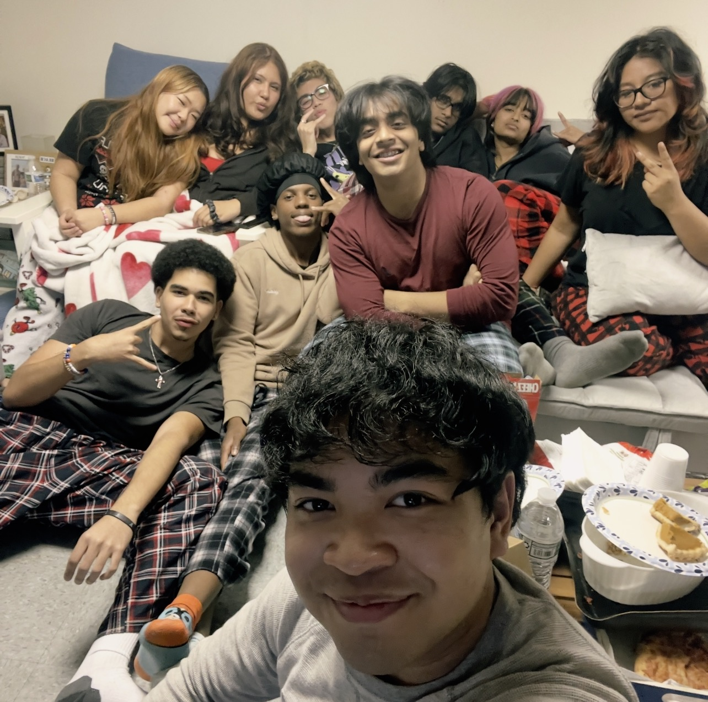

About Me!
Student at Thomas A. Edison CTE High School
Hello there! If you want to learn more about me as a person instead of just a student, feel free to do so! Everything written here talks about what makes me happy and most of my interests.

Family and Best Friends
One of my greatest treasures in my whole entire life is both my family and best friends. To start off, my parents are both the most loving people I know in my life. My mom brings the joy in my life and shows that not everything needs to be full of gloom, but you can instead show a big smile and be funny in a way that you can brighten anyones day. My dad is the one who always teaches me the greatest life lessons and it built me into who I am today. He also is very kind and he is always considerate of others, and just like my mom, he is also very funny. Both my mom and dad have helped me grow up with so much love, I can't help but give that love to my best friends. I met all of them in Thomas A. Edison Highschool, and they have stuck with me at my absolute worst. They are the lights in my life because I see them as all the birthday candles I blew out. I couldn't have prayed for anyone else in my life other than them. They allow me to be myself and I can't help but show all of them so much love and support!